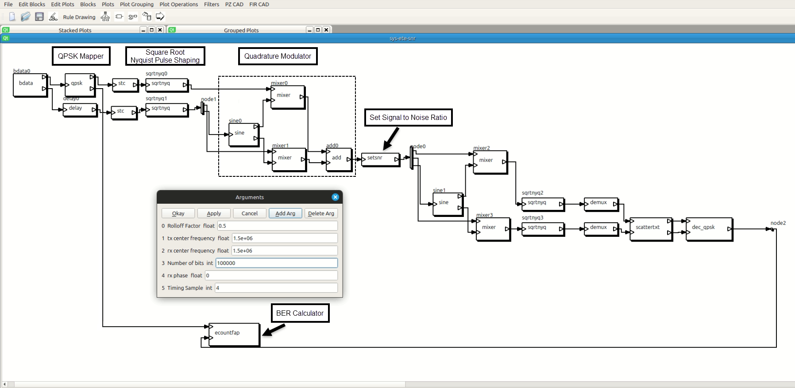
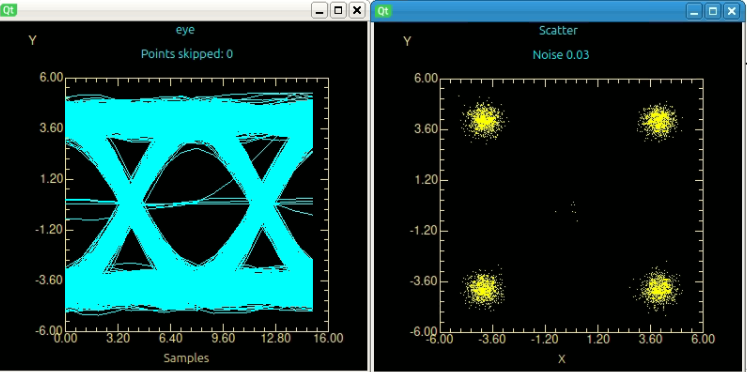
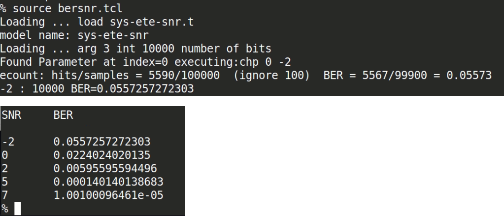
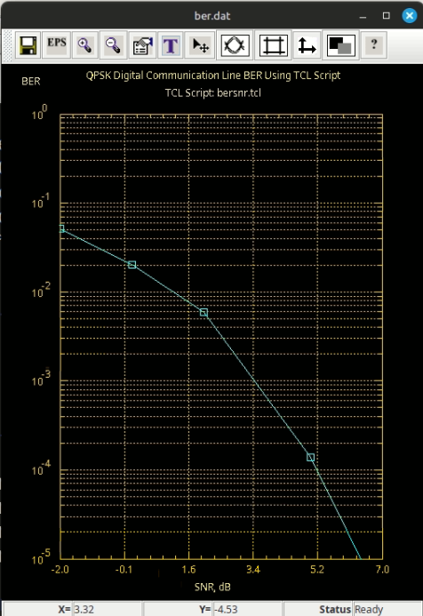
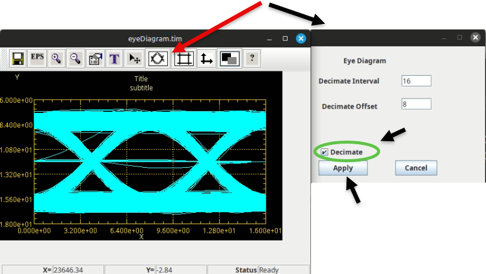

|
|
|
|
Icons ,
Credit the Noun Project.
Item |
Description |
Link |
Type |
1 |
Introduction to the Capsim®Digital Communication Link Block Diagram Modeling and Simulation |
Introduction |
|
2 |
Capsim® Block Diagram End to End QPSK Digital Communication Link |
Screen Shots |
|
3 |
List of Topologiies Included in Repository |
Table |
|
4 |
C Blocks Part of Digital Communication Links |
Table |
|
5 |
Building Capsim® for Digital Communication Link Modeling and Simulation |
Instructions |
|
6 |
Capsim® Text Mode Kernel (TMK) Installation |
|
GitHub Repository |
7 |
GitHub Repository Capsim® Digital Communication Link |
|
GitHub Repository |
6 |
Digital Communications Basics by Silicon DSP Corporation |
Video Tutorial |
|
Copyright (c) 2000-2007 Silicon DSP Corporation Permission is granted to copy, distribute and/or modify this document under the terms of the GNU Free Documentation License, Version 1.2 or any later version published by the Free Software Foundation; with no Invariant Sections, no Front-Cover Texts, and no Back-Cover Texts. A copy of the license is included in the section entitled "GNU Free Documentation License".
Block Diagram Topologies are provided for modeling and simulation a QPSK Digital Communication Links. All the blocks used in the topologies are included in the Capsim® Text Mode Kernel (TML) Repository. TCL scripts are provided for running multiple simulations at different SNR and tabulating the result showing BER versus SNR in dB. The communication link uses Nyquest Pulse Shaping where the rolloff factor can be specified. The sqrtnyq.s block is used at the receiver and transmitter with the sqrtnyq.s block at the receiver being the matched filter.
For some of the topologies, files are genererated to view the received eye diagram and constellation. Use the IIPPlot.jar Java program to plot the results. Three convenient scripts are provided: xeyeplot, xplot and xscatter. For example, run the command:
source xscatter Scatter.sct
to create a plot of the received constellation.
Since Capsim® does not have memory leaks, the simulations can be run for huge number of bits. The topology sys-ete-ber.t runs for 10,000,000 bits and reports the Bit Error Rate (BER).
The TCL Script bersnr.tcl uses the topology: sys-ete-snr.t to run multiple simulations with different SNR values and tabulates BER versus SNR (dB).
Note this repository supports the Text Mode Kernel version of Capsim®. The graphical block diagram is from the soon to be released Capsim® Version 7 which uses Qt® for interactive graphical interface. However, the topology in this Repository are the same. You can use the block names in the screen shot and then use the Capsim® command "to blockname" to go the the block, change parameters and run the simulation. There is a lot of benefit to the non graphical mode in portability and flexibility. The graphical version also supports the text mode operation.
An updated link to Capsim® Version 7 using Qt® will be provided in the Repostory on GitHub. Stay tuned.




| Item | Topology Name | Description | Author | Date |
|---|---|---|---|---|
| 1 | sys-qpsk.t | QPSK end to end digital communications link with Nyquist Pulse Shaping. Creates file with data for plotting eye diagram as well as file to plot received constellation. | Ardalan | 2002 |
| 2 | sys-ete-snr.t | QPSK end to end digital communications link with Nyquist Pulse Shaping. Set SNR for channel in dB. No files created for plotting. Stand alone. Also used by TCL scripts. | Ardalan | 2002 |
| 3 | sys-ete-ber.t | QPSK end to end digital communications link with Nyquist Pulse Shaping. Set noise with addnoise.s block. No files created for plotting. Simulates 10,000,000 bits, addnoise block parameter 0.15 with resulting BER of 1e-07 | Ardalan | 2002 |
| 12 | bersnr.tcl | TCL Script that uses the topology: sys-ete-snr.t to run multiple simulations with different SNR values and tabulates BER versus SNR (dB) | Ardalan | August 10, 2002 |
| Item | Block Name | Description | Author | Date |
|---|---|---|---|---|
| 1 | bdata | This function generates a random sequence of bits, which can be used to exercise a data transmission system. The pseudo-random sequence generator uses the polynomial x**10+x**3+1 | R. T. Wietelmann/G.H.Brand (Berkeley) | Oct 7, 1982, Modified by Messerschmitt March 11, 1985 |
| 2 | qpsk.s | This block inputs data(bits) and ouputs the coordinates based on qpsk. It produces an in phase and quadrature component. Not very efficient but illustrative. | Ardalan | Dec 14, 2000 |
| 3 | stc.s | This block inputs data and stretches it with zeros. The code output oversampling rate (samples per baud interval) is selected by the parameter `smplbd' | Ali Sadri | June 4, 1990 |
| 4 | sqrtnyq.s | This block performs Nyquist pulse shaping for a baseband transmitter.
See Carlson, Communications Systems, page 381, equation 17b.
The Nyquist criterion in the frequency domain is to have an amplitude
rolloff which is symmetric about Fb/2 (half baud frequency).
First, a frequency-domain amplitude response is created using a raised
cosine shape. This computation is affected by:
Param: 1 - (int) smplbd: samples per baud interval. default=>8
Param: 2 - (int) expfft: 2^expfft = fft length to use. default=>8
Param: 3 - (float) beta: filter rolloff factor, 0 |
Jim Faber | Jan. 14, 1987 |
| 5 | sine.s | This block generates a sinusoid ( cosine for zero phase, sine for quadrature if second output buffer connected) . The The first parameter, which defaults to NOSAMPLES (128), tells how many total samples to send out. The second parameter is the magnitude which defaults to one. The third parameter is the sampling frequency. The 4th parameter is the frequency. The fifth parameter is the phase is degrees. | Ardalan | Nov. 1987 |
| 6 | setsnr.s | Set the Signal to Noise Raio (SNR) in dB by calculating power over window of input samples and adding noise. | Ardalan | February 2003 |
| 7 | mixer.s | This block takes two inputs and produces their product. | John T. Stonick | 1990 |
| 8 | demux.s | This block provides periodic demultiplexing of an input data stream. It is appropriate for sub-sampling (integer decimation) or creating data streams for fractionally-spaced equalization (FSE). For every N (integer) input samples, 1 sample is sent to each output. The number of outputs and their phases are selectable. | Jim Faber | April 1988 |
| 9 | scattertxt.s | This block will produce a scatter plot (stored in a text file) of the two input channels. channels. Optionally, the input channel data can 'flow through' to the correspondingly numbered output channel. This is useful if this block is to be placed in line in a simulation (e.g. probe). | Ardalan | August 16, 1987 |
| 10 | dec_qpsk.s | This block inputs constellation points and decods them into a bit stream. It is assumed that the constellation was produced by qpsk.s. Not efficient but illustrative. | Ardalan | Dec 14, 2000 |
| 11 | ecountfap.s | This block compares two data streams for "equality". (Since the input streams are floating point, a guard band is used.) An output stream is created, with 'zero' output for equality, and 'one' if there is a difference. (Note: the output stream is optional--if no block is connected to the output, there is no output.) Param. 1 selects an initial number of samples to be ignored for the final error tally (used during training sequences); default zero. Param 2 sets an index, after which a message is printed to stderr for each error. It defaults to "infinity", i.e. no error messages. This block prints a final message to stderr giving the error rate (errors/smpl), disregarding the initial ignored samples. Modified by Ardalan to make result accessable to TCL. | Jim Faber | Dec 1987 |
1- Obtain the Capsim® Text Mode Kernel (CapsimTMK) for Linux from:
GitHub Capsim Text Mode Repository
CapsimTMK is distributed with hundreds of blocks.
This Repository contains the Topologies for QPSK Digital Communication Link block diagram modeling. All blocks used are part of the Capsim® TMK Repository.
Note: Follow the Getting Started Guidelines in the CapsimTMK Repository.
2- Once CapsimTMK is installed just run 'make' in this repository's main directory.
3- Then change to the directory 'Topologies' and run:
../capsim sys-qpsk.t
The block diagram for the sys-qpsk.t topology is shown here.
The following is the console report:
../capsim sys-qpsk.t Welcome to Capsim Text Mode Kernel (CapsimTMK) (c)1989-2017 Silicon DSP Corporation This is free software; see the source for copying conditions. There is NO warranty; not even for MERCHANTABILITY or FITNESS FOR A PARTICULAR PURPOSE. http://www.silicondsp.com Version 6.2 Running topology sys-qpsk.t model name: sys-qpsk plot created file: eyeDiagram.tim scatter created file: Scatter.sct ecount: hits/samples = 12/8000 (ignore 100) BER = 0/7900 = 0 plot created file: plot2.tim
There are multiple results you can plot.
Use the plotting tool provided with the CapsimTMK repository:
java -jar $CAPSIM/TOOLS/IIPPlot.jar -scatter Scatter.sct
java -jar $CAPSIM/TOOLS/IIPPlot.jar eyeDiagram.tim
With Linux you can send the plot application to run in the background to put plots side by side when you want to display multiple plots. Then bring them to the forgound and use Control C to exit.
For the eye diagram refer to the screen shot below.

To run the TCL scripts, for example bersnr.tcl, use this command:
../capsim -t bersnr.tcl
The results are shown below. Note that a table of BER versus SNR is created.
Current Block: setsnr0 (star: setsnr) Found Parameter at index=0 executing:chp 0 -2 ecount: hits/samples = 540/10000 (ignore 100) BER = 517/9900 = 0.05222 -2 : 10000 BER=0.0522222220898 Current Block: setsnr0 (star: setsnr) Found Parameter at index=0 executing:chp 0 0 ecount: hits/samples = 220/10000 (ignore 100) BER = 203/9900 = 0.02051 0 : 10000 BER=0.0205050501972 Current Block: setsnr0 (star: setsnr) Found Parameter at index=0 executing:chp 0 2 ecount: hits/samples = 611/100000 (ignore 100) BER = 595/99900 = 0.005956 2 : 100000 BER=0.00595595594496 Current Block: setsnr0 (star: setsnr) Found Parameter at index=0 executing:chp 0 5 ecount: hits/samples = 29/100000 (ignore 100) BER = 14/99900 = 0.0001401 5 : 100000 BER=0.000140140138683 Current Block: setsnr0 (star: setsnr) Found Parameter at index=0 executing:chp 0 7 ecount: symbol error @1159369 ecount: symbol error @1192307 ecount: symbol error @1686990 ecount: symbol error @1810859 ecount: symbol error @2873993 ecount: symbol error @3899273 ecount: symbol error @4108855 ecount: symbol error @4110293 ecount: symbol error @4185661 ecount: symbol error @4214178 ecount: symbol error @4364059 ecount: symbol error @4429261 ecount: symbol error @4688479 ecount: symbol error @5066085 ecount: symbol error @5467199 ecount: symbol error @5806823 ecount: symbol error @6407347 ecount: symbol error @6961648 ecount: symbol error @7278569 ecount: symbol error @7369518 ecount: symbol error @8336623 ecount: symbol error @8416624 ecount: symbol error @8524802 ecount: symbol error @8574366 ecount: symbol error @8613330 ecount: symbol error @8896281 ecount: symbol error @9600581 ecount: symbol error @9792191 ecount: symbol error @9900089 ecount: symbol error @9930595 ecount: hits/samples = 48/10000000 (ignore 100) BER = 32/9999900 = 3.2e-06 7 : 10000000 BER=3.20003209708e-06 6 SNR BER -2 0.0522222220898 0 0.0205050501972 2 0.00595595594496 5 0.000140140138683 7 3.20003209708e-06
The file ber.dat is created. To plot the results use the command:
java -jar $CAPSIM/TOOLS/IIPPlot.jar ber.dat
In the plot the Y axis was changed to Logarithmic. Also the Marker+Line stye was selected. Also the theme was changed.
Silicon DSP Corporation
2002-2025
https://www.ccdsp.org